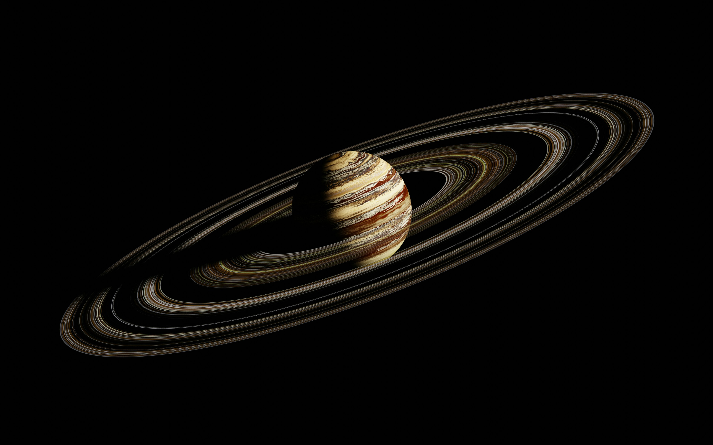
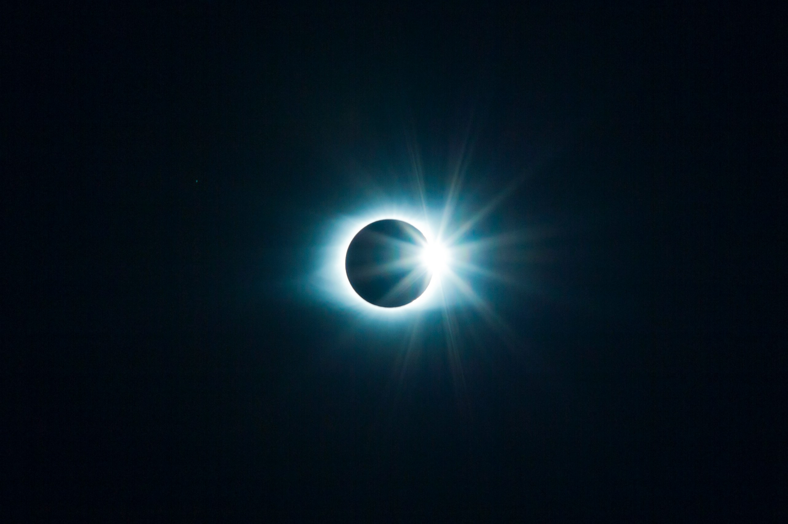
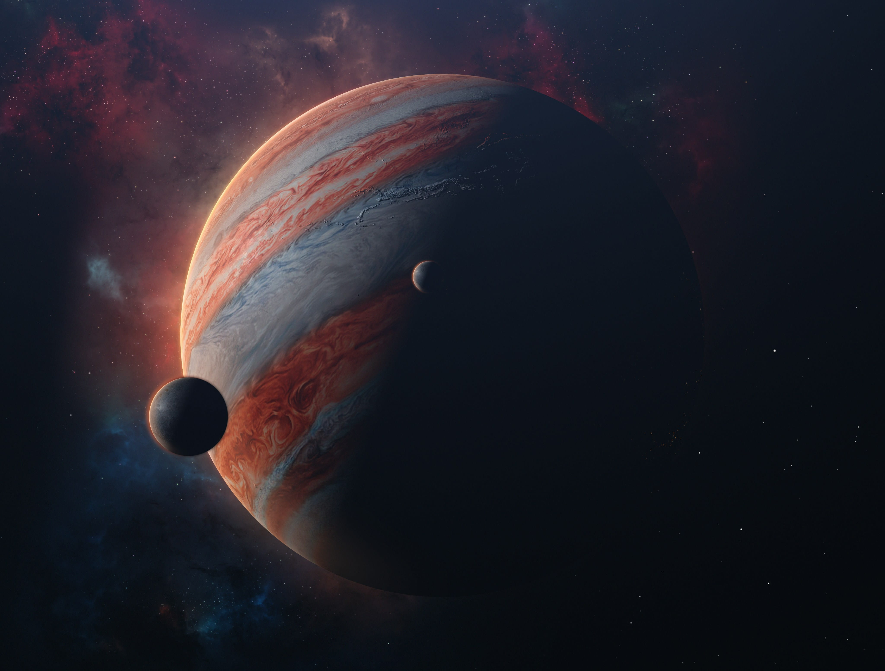
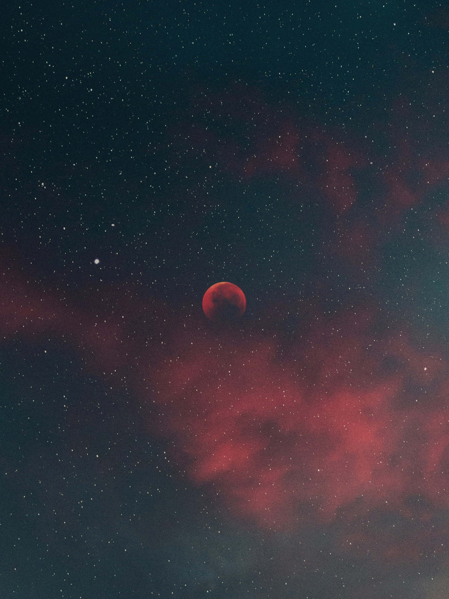
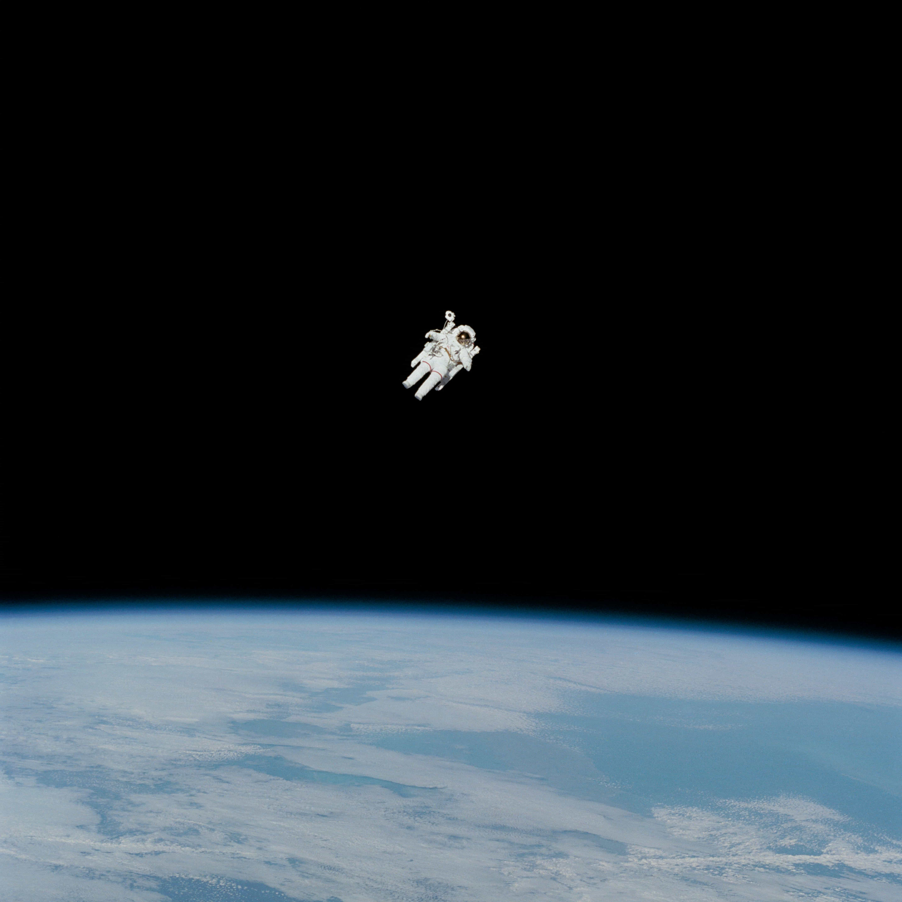
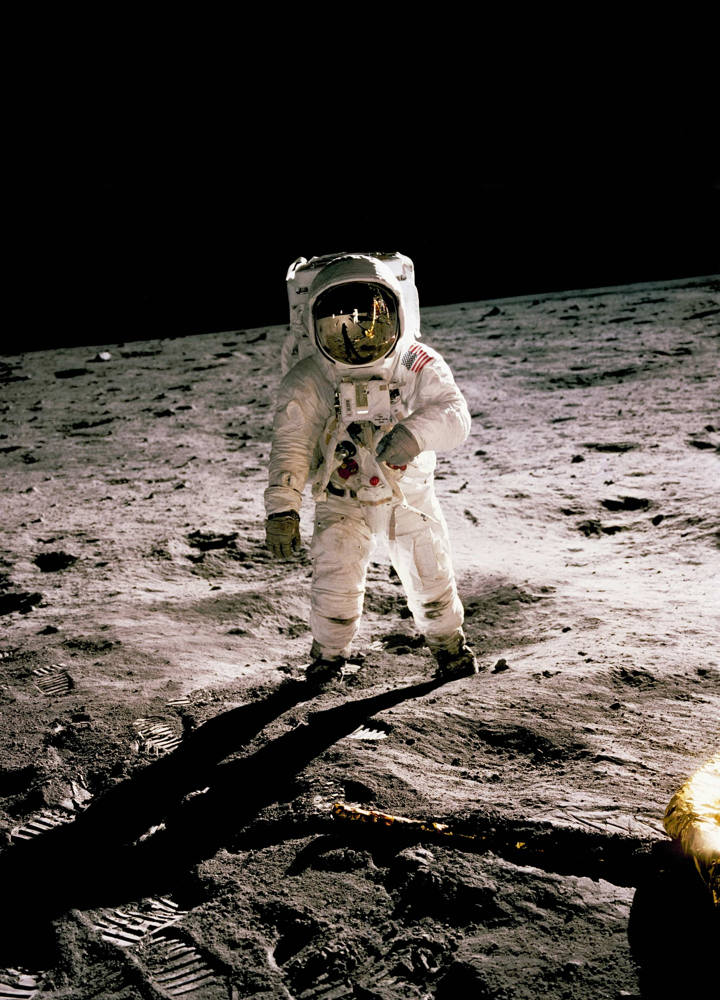
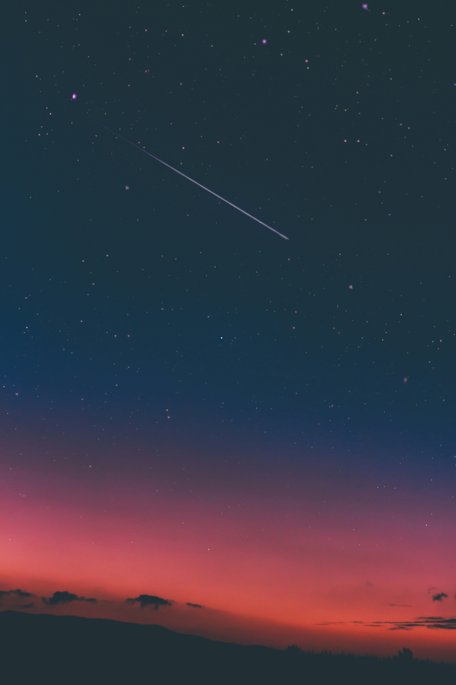
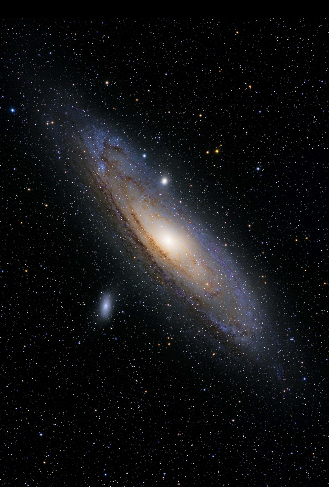

We believe space is more than a destination. It is humanity's greatest source of curiosity, innovation, and inspiration. Our mission is to make the wonders of the cosmos accessible to everyone through immersive experiences, educational insights, and breathtaking visuals. From the birth of distant stars to the exploration of new worlds, we bring the universe closer than ever before. Every mission, every discovery, and every story reminds us that there is always something extraordinary waiting beyond the next horizon.

Step beyond the limits of Earth and experience the breathtaking beauty of the universe through carefully crafted journeys into deep space. Explore distant galaxies, witness brilliant nebulae glowing with vibrant colors, and uncover the fascinating science behind planets, black holes, and stellar evolution. Every destination reveals a new chapter of the cosmos, inviting curious minds to understand how our universe formed, continues to expand, and inspires generations to dream beyond the horizon.

The future of space is filled with extraordinary possibilities, from establishing permanent lunar habitats to sending human missions toward Mars and beyond. As scientific knowledge grows and technology evolves, the dream of living among the stars becomes increasingly achievable. Join a community driven by curiosity, innovation, and discovery as we continue exploring the endless mysteries that stretch across the vast universe, inspiring people to look upward with wonder and determination.

Discover breathtaking galaxies, powerful rockets, and humanity's greatest space missions. From the first step on the Moon to the search for life beyond Earth, every journey reveals a new chapter of our universe. Explore the technology, science, and stories that continue to push the boundaries of what's possible.





Stellar is a strong choice because it instantly communicates the theme of the website without feeling overly literal. The word is associated with stars, excellence, exploration, and the vastness of space, creating an immediate emotional connection with visitors. It is short, easy to pronounce, easy to remember, and visually balanced, making it ideal for modern logos, branding, and typography. Unlike names that rely on numbers, symbols, or uncommon spellings, **Stellar** feels clean, timeless, and professional while still carrying a futuristic identity. It has the versatility to grow beyond a simple space website into a recognizable brand, whether for technology, education, science, or digital experiences. Overall, the name reflects quality, curiosity, innovation, and a sense of discovery, making it a compelling and credible identity for a premium space-themed project.